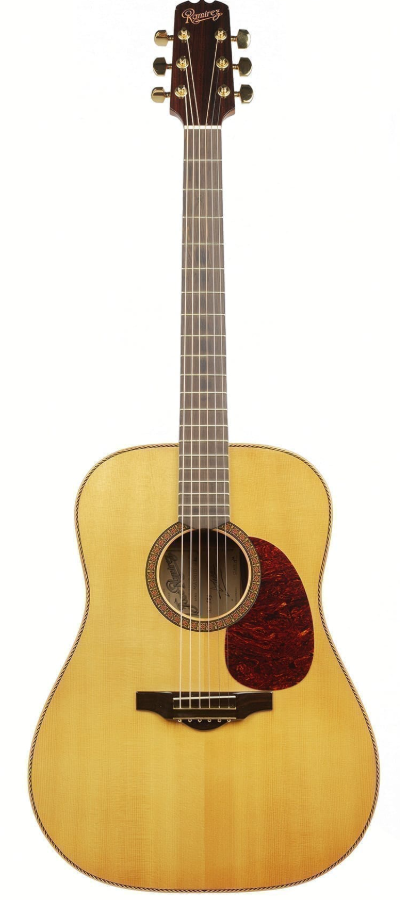

Guitarra Acústica CAROLINA - A33

Descripción
La CAROLINA A33 es una guitarra acústica con un sonido cálido y equilibrado. Su diseño está pensado para ofrecer comodidad y facilidad de uso.
Es una buena opción para acompañamiento, composición y práctica musical en diferentes niveles.
Características
| Características | Especificación |
|---|---|
| Modelo | A33 |
| Tipo | Guitarra Acústica |
| Color | Natural |